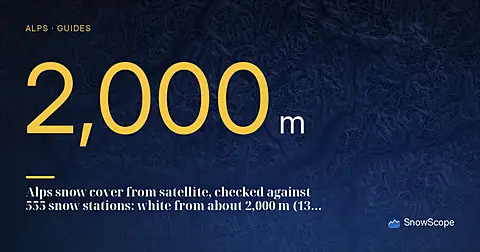

Valloire-Valmeinier December snow odds and prices
If you are planning a ski trip to Valloire-Valmeinier this December, the snow odds depend heavily on which week you choose. Our snow history of 46 past winters shows that while the base can be thin early on, the higher slopes are very reliable. By mid-December, the mid-mountain area has a 98 % chance of having at least 30 cm of snow.
See the live snow forecast for Valloire-Valmeinier in the SnowScope appSnow depth, powder alerts and the 3D map, free.
Weekly snow probabilities at the base
At the bottom of the lifts, which sit at 1406 m, the first week of December is often thin. In our snow history, only 26 % of past winters had at least 30 cm of snow during the first week. This probability increases as the month continues. By the second week, the chance of having 30 cm at the base rises to 43 %, and it reaches 50 % between 15 and 21 December. For the Christmas week, the odds improve to 65 %.
If you are looking for a deeper base of 50 cm or more at 1406 m, the numbers are much lower. In the first week of December, this has only happened in 2 % of past winters. By the final week of the month, the chance of a 50 cm base is still only 30 %. Snow usually starts to stay on the ground at this height around 22 October, and the usual depth on 15 December is 29 cm.

Reliability at mid-mountain and the top
The situation changes significantly when you move higher up the mountain. At mid-mountain, which is 2072 m, the usual December depth is 66 cm. In the first week of the month, there is a 76 % chance of having at least 30 cm of snow. By the second week, this rises to 87 %, which is about 9 winters in 10. For the rest of the month, the chance is 98 %, so almost every winter.
At the top of the lifts, which reach 2738 m, the snow is very reliable from the start of the month. There is a 98 % chance of 30 cm in the first week, and in every winter since 1980-81, there has been at least 30 cm from 8 December onwards. The usual depth at the top on 15 December is 123 cm, and the usual season peak at this height is 300 cm.
Value for money on the slopes
The mapped ski area has 131 km of runs and 34 lifts, with a vertical drop of 1332 m. For those visiting early, there is a special price for the opening weekend of 5-6 December 2026. A pass with ice-rink access costs 20 EUR. This is a very low cost for a weekend of skiing if the early snow arrives.
For the rest of the season, an adult 1-day Galibier-Thabor pass is 54.90 EUR at the standard rate. If you are staying for a full week, the adult 6-day Galibier-Thabor pass costs 278.50 EUR. These prices are from the official site for the winter 2026-27 season and offer access to the entire linked area between Valloire and Valmeinier.
Comparing Valloire with Serre Chevalier
South of Valloire-Valmeinier, Serre Chevalier is a larger resort with 157 km of runs and 70 lifts. While Serre Chevalier has more vertical at 1546 m, Valloire-Valmeinier often has deeper snow at its key heights. At mid-mountain, Valloire (2072 m) has a usual December depth of 66 cm, while Serre Chevalier (1992 m) usually has 58 cm. At the top of the lifts, Valloire (2738 m) records a usual depth of 126 cm compared to 111 cm at Serre Chevalier (2765 m).
The probability of having 50 cm or more at mid-mountain in the third week of December is 80 % in Valloire, but only 59 % in Serre Chevalier. Prices also differ during the holiday period. A 6-day pass in Serre Chevalier is 276.00 EUR before 18 December, but it rises to 345.00 EUR from 19 December to 1 January. In comparison, the Valloire 6-day pass is 278.50 EUR for the same period.
Historical trends and current conditions
Our snow history of 46 past winters shows that December snow depths have generally increased. In the first 15 winters of our records, from 1980-81 to 1994-95, the middle of the mountain averaged 55 cm in December. In the last 15 winters, from 2011-12 to 2025-26, that average rose to 69 cm. At the top of the lifts, the average increased from 106 cm to 129 cm between those two periods. In a usual winter, there are 226 snow days at mid-mountain.
On 13 November 2026, the snow now estimate shows 0 cm at the base and mid-mountain, with 16 cm at the top. The next 7 days are forecast to bring 22 cm of new snow to the base, 58 cm to mid-mountain, and 82 cm to the top. Between 13 November and 26 November 2026, the two-week outlook for mid-mountain and above suggests a range of 69 cm to 99 cm of new snow, with a middle estimate of 84 cm.
Tips for skiers
- Book for the week of 22-28 December if you want the best chance of snow at the 1406 m base, which has a 65 % probability of 30 cm.
- Focus your skiing above 2072 m where there is a 98 % chance of 30 cm snow depth from 15 December onwards.
- Purchase the adult 6-day Galibier-Thabor pass for 278.50 EUR on the official site to cover the 131 km of runs.
- Always check the avalanche bulletin before considering any off-piste skiing, especially when the depth at the top reaches its usual 123 cm.
More maps (external sites)
References and credits
- Valloire, official ski pass shop (Galibier-Thabor), winter 2026-27 skipass.valloire.com/fr/
- Serre Chevalier, official booking site, ski passes 2026-27 reservation.serre-chevalier.com/achetez-vos-ski-pass-serre-chevalier-et-autres-prestations.html
- SnowScope, December snow at three heights and today's snow map snowscope.app/
About these numbers
Snow now and the two-week outlook: SnowScope forecasts (outlook from ECMWF and GFS, a range, not a promise). Lifts and runs: OpenSkiMap mapping. Prices: the official resort pages listed below, read on 2026-11-13; prices can change, check before booking.
Official avalanche bulletins: Météo-France – Bulletin d'estimation du risque d'avalanche
Cite this report
For research, teaching or the press: the numbers and charts are free to reuse under CC BY 4.0 with this citation.
SnowScope (2026), Valloire-Valmeinier December snow odds and prices, https://snowscope.app/blog/en/2026/11/valloire-valmeinier-december-snow-odds-value-2026.html, accessed 2026-11-14
SnowScope (Atlas Labs). (2026, November 14). Valloire-Valmeinier December snow odds and prices. SnowScope snow reports. https://snowscope.app/blog/en/2026/11/valloire-valmeinier-december-snow-odds-value-2026.html
BibTeX
@misc{snowscope2026valloirevalmeinierdecemb,
author = {{SnowScope (Atlas Labs)}},
title = {Valloire-Valmeinier December snow odds and prices},
year = {2026},
month = nov,
howpublished = {\url{https://snowscope.app/blog/en/2026/11/valloire-valmeinier-december-snow-odds-value-2026.html}},
note = {Published 2026-11-14 13:29 UTC; accessed 2026-11-14}
}· CC BY 4.0 · Methods, data and tools →
Valloire-Valmeinier: snow and temperature by height, this winter vs last (tools) →
Follow Valloire-Valmeinier
Free: a message when fresh snow is coming, and the forecast every morning.
More snow reports

From 20 EUR on an opening weekend to 6-day passes before Christmas: a calendar of the cheapest early-season ski deals in the Alps for 2026, with the snow you can expect.

How reliable is each?

We rank French ski resorts by December snow odds and checked pass prices, starting from 36.00 EUR for an adult day pass in Les Karellis.